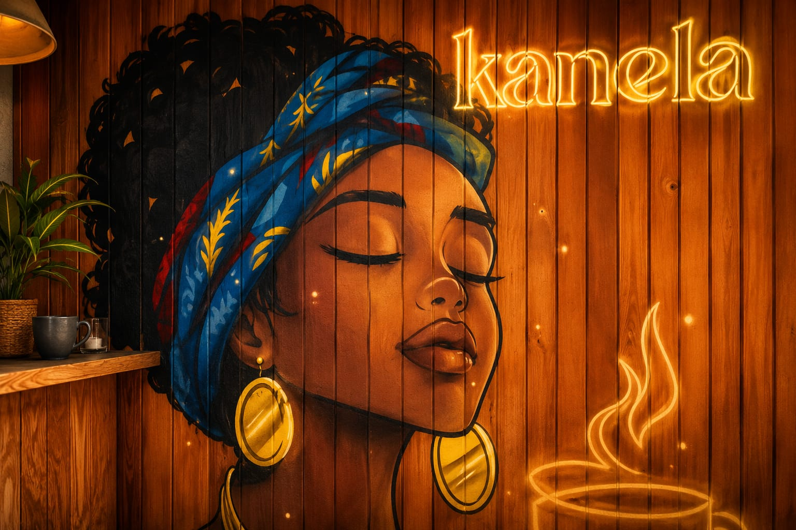

Tostada especial
Ahumada
Una propuesta fresca, elegante y llena de sabor. Perfecta para empezar el día o disfrutar de un brunch con calma.

Kanela es café, tostadas especiales y un ambiente cálido pensado para esos momentos que saben mejor con calma.
Un espacio con alma tranquila, sabores cuidados y una estética pensada para que cada visita se sienta especial.
Una propuesta fresca, elegante y llena de sabor. Perfecta para empezar el día o disfrutar de un brunch con calma.

Equilibrada, sabrosa y con ese punto diferente que la hace especial.

Una mezcla delicada, cremosa y con personalidad propia.
Una bebida fresca, visual y diferente. De esas que entran por los ojos y se disfrutan todavía más en buena compañía.
Quiero probarla
“Café rico, ambiente bonito y platos hechos para disfrutar.”
C/ Fuente del Hierro 21, trasera · Pamplona
Lunes a viernes: 8:30 - 13:30 / 16:30 - 20:00
Sábado y domingo: 9:30 - 14:30 / 17:00 - 20:00